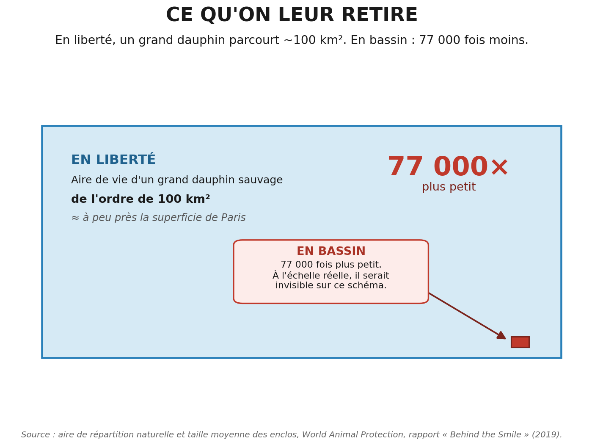

Des êtres complexes, un bassin pour seul horizon
Juillet 2026
Les dauphins et les orques comptent parmi les êtres les plus complexes du vivant : un cerveau volumineux, la reconnaissance de soi dans un miroir, des liens sociaux qui durent toute une vie, des cultures — dialectes, techniques de chasse — transmises de génération en génération. Un grand dauphin sauvage parcourt un territoire de l'ordre de 100 km². Un bassin, c'est des dizaines de milliers de fois moins.

De l'autre côté, ce que la captivité leur fait. Ce n'est pas un inconfort : c'est l'effacement de presque tout ce qui fait leur existence. Et les traces sont visibles — l'aileron des orques mâles qui s'affaisse, quasi systématique en bassin et rarissime en liberté ; les dents usées à force de ronger le béton ; les mouvements répétitifs, le stress chronique.
En face, qu'est-ce qu'on met dans la balance ? Un spectacle. Un divertissement entièrement remplaçable par un film, un documentaire, une sortie d'observation en mer.